Setting Up a Windows XP Virtual Machine Using Ubuntu
It’s probably fair to say that Windows XP was Microsoft’s most beloved OS. Today, we'll walk through the setup of a virtual XP installation on Ubuntu, step-by-step.
In fact, once you’ve managed to procure a working XP installation disc image and serial key, the whole process can be completed in around 30 minutes on most machines produced in the last decade (although it might take you a little longer on the first run through). Likewise, any PC with a dual-core processor should be able to run a virtualized XP environment well enough to complete non-gaming tasks with ease.
What You Will Need
Before we get started, you should ensure that you’ve prepared the following:
- A recent Ubuntu installation I’m running 21.04
- A Windows XP Installation ISO I won’t include any direct links, but iso files can be found on countless websites these days. Or, if you prefer, you can create an ISO using a legit CD.
- A Windows XP Serial Key These can be legally obtained from a number of sources.
Likewise, you will probably also want to ensure that you’ve got at least 10GB free for your virtual machine.
Installing Virtualbox
The process of installing Virtualbox is actually very straightforward, and requires no additional repositories beyond those offered by a standard Ubuntu installation.
From the terminal, you can execute the following command:
sudo apt-get install virtualbox -yNote: You might be wondering what the “-y” flag is used for at the end of this command. Essentially, it automatically pipes an answer of “yes” to the “Do you want to continue?” prompt which is displayed whenever you attempt to install packages from the terminal. Essentially, it just makes installing from the command-line fractionally simpler and quicker.
Setting Up Your New Virtual Machine
Once booted, you’ll be presented with the standard “Oracle VM Virtualbox Manager” screen. From there, you can click “New”.
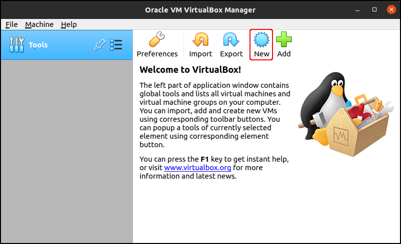In the “Name and operating system” screen, you can enter the following details:
- Name (1) This can be anything you like. Typically, I’ll just use “XP” or “XP Machine”
- Machine Folder (2) It’s important to ensure that your machine is stored on a drive that will be able to accommodate your machine, especially if it’s likely to dramatically grow in size.
- Type (3) Should be set to “Microsoft Windows”
- Version (4) For this field, you can select either “Windows XP (32-bit)” or “Windows XP (64-bit)”. You should select the 32-bit installation unless you specifically require 64-bit support.
Click “Next”(5), and select the amount of memory you’d like to allocate to your machine. As we won’t be gaming, I usually find that one gigabyte is more than adequate, but feel free to adjust this if you expect to be doing any ram-intensive work (for example, if you intend to set up an audio or video workstation under a virtualized XP environment).
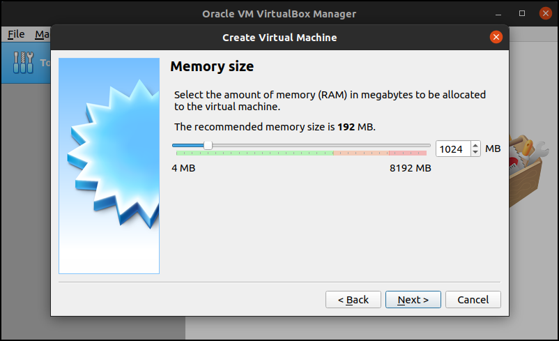Click “Next” again, and you should now see the “Hard disk” screen. If it’s not already selected, go ahead and click the radio button next to “Create a virtual hard disk now” (1), followed by “Create” (2).
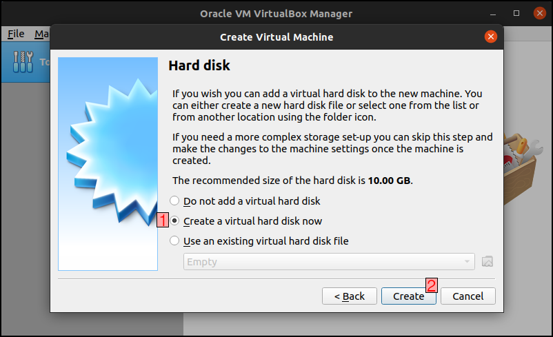Under “Hard disk file type”, select “VDI (VirtualBox Disk Image)”, then click “Next” again.
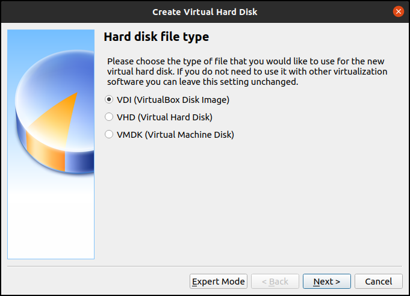At this point, you’ll have the option to choose between a “Dynamically allocated” or “Fixed size” disk image.
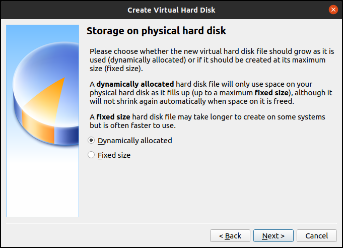The beauty of dynamic allocation is that the disk image size will only expand to accommodate what the virtual machine is actually using; on the other hand, a fixed size image will take up the maximum amount of space you set (in the next screen) on your hard drive. I always use dynamic allocation when setting up virtualized OS installations, and have never encountered any issues with it.
Click “Next” once again, and you should see the “File location and size” section. This screen allows you to set the location of your VirtualBox Disk Image, as well as the maximum size limit (or, if you selected “Fixed Size” for your disk image, the initial amount of space which will be occupied on your computer).
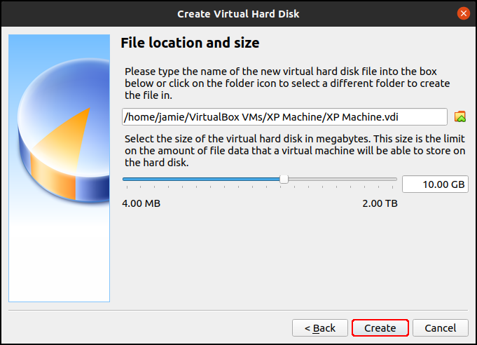The size should automatically be set to 10.00 GB, and I tend to stick with this for anything prior to Windows 10.
You can now click “Create”.
Installing Windows XP
Now that the virtual machine has been created, you can begin the process of installing Windows XP to it.
First, right-click the name of the virtual machine (1), then click on “Settings” (2).
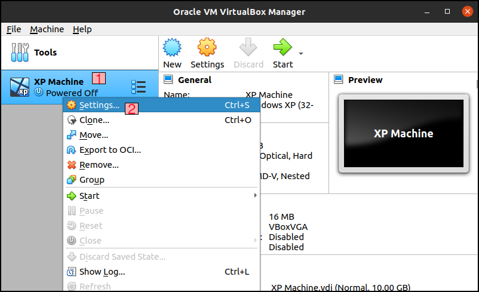Once the settings menu opens up, click the “Storage” heading, then select the “Empty” optical drive entry. You should now see a CD drive icon (3) which, when clicked, will allow you to “Choose a disk file” (4).
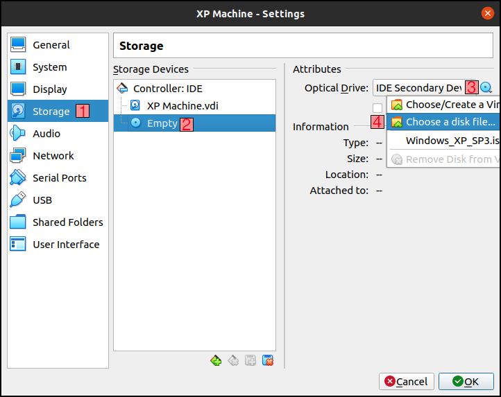Select the appropriate XP iso file to boot from, then click “Ok”.
Now, you can click “Start” to begin booting your XP machine.
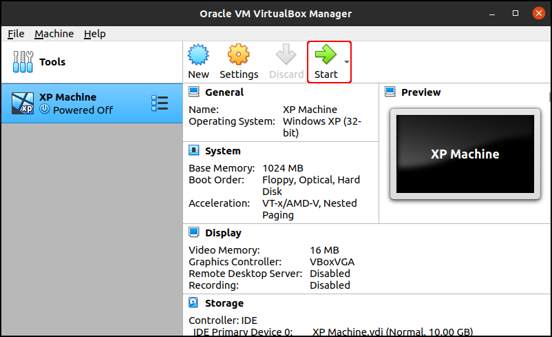After 10-15 seconds, you should see the below screen. Hit the Enter key to continue.
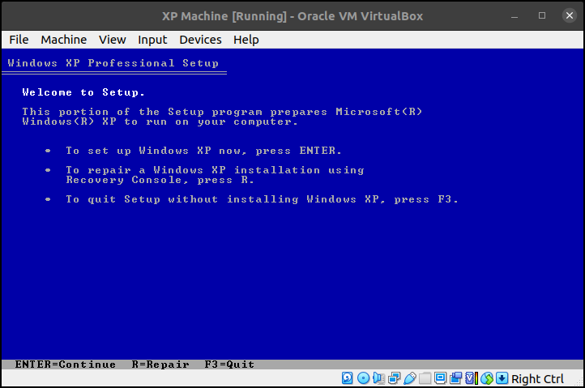Read through the terms and conditions (if you’re into that kind of thing), and then hit F8.
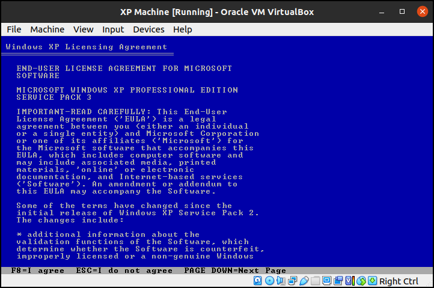Next, begin the process of formatting your hard drive. You can do this by hitting the Enter key.
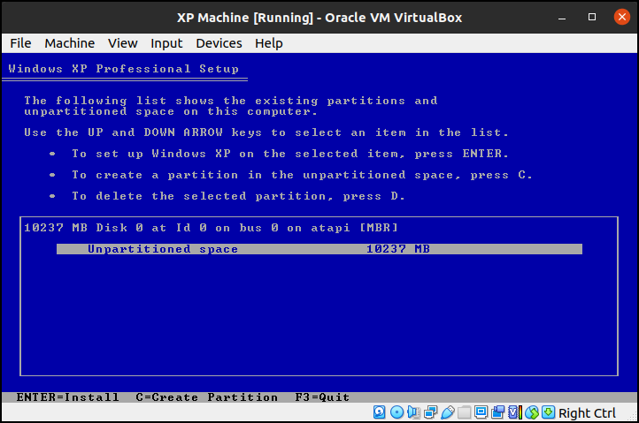On the following screen, you can select the method you’d like to use to format your virtual disk image. I'll generally opt for the “FAT File System (Quick)” option, but feel free to experiment; assuming your virtual disk image is less than 32GB, you’re unlikely to notice much of a difference.
If you do select the FAT option, you’ll receive another warning screen; you can get past this by hitting Enter.
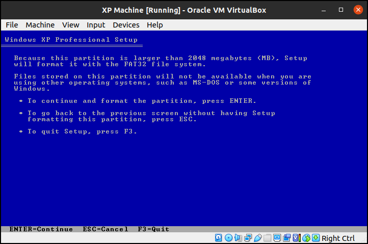Once setup has finished copying files, you’ll then see the more-friendly looking Windows XP setup process begin.
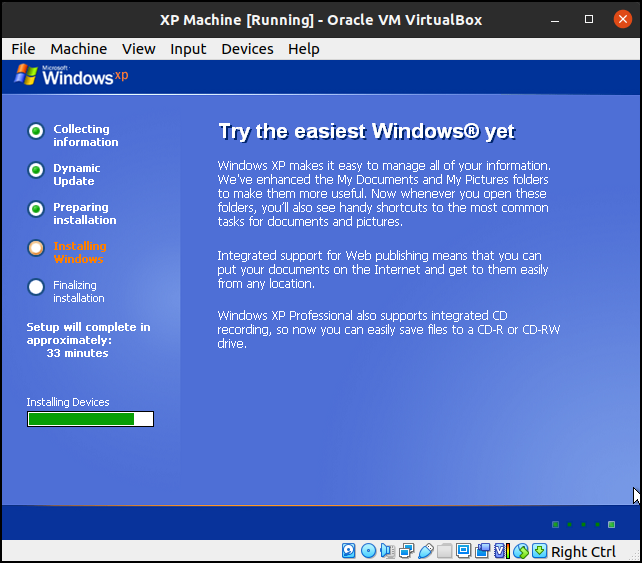When prompted, you can feel free to go into the options and tinker your installation to suit your needs; generally speaking, you’ll only really need to change the localization options at this stage, but you can go wild if you like; very little can go wrong here, and the worst case scenario would be that you’d need to begin the setup process from the beginning.
You’ll also need to enter your legally obtained serial key.
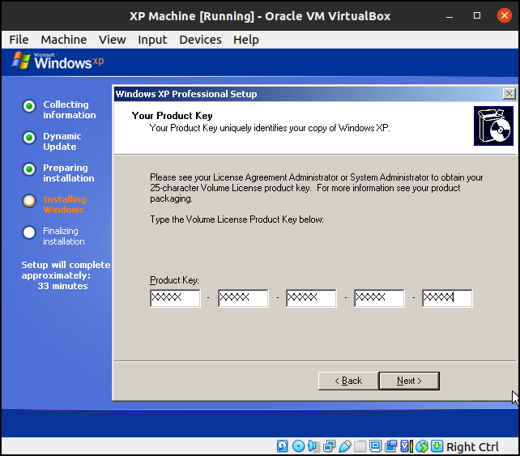You can continue progressing through the setup process by clicking “Next” and, eventually, you’ll see the Network Settings screen. If you want to connect to the internet without any configuration, you should stick with “Typical settings” and click “Next”.
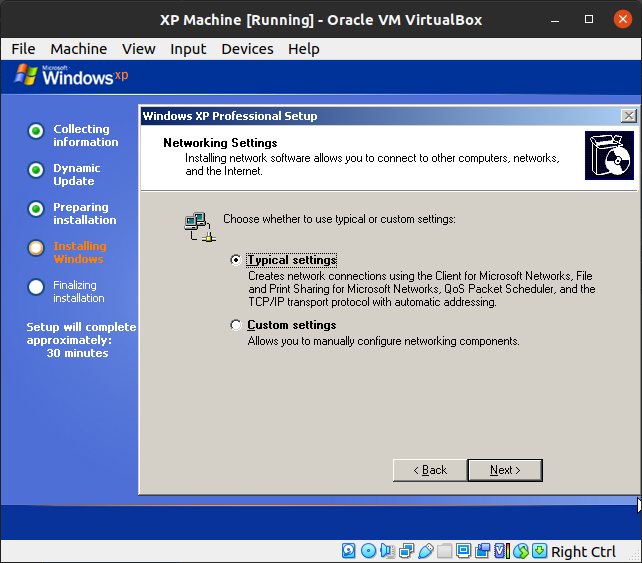When asked about your workgroup, feel free to enter whatever you like. I always just leave it set to “WORKGROUP”. Click “Next” again, and the process will take some time to copy files before the next prompt.
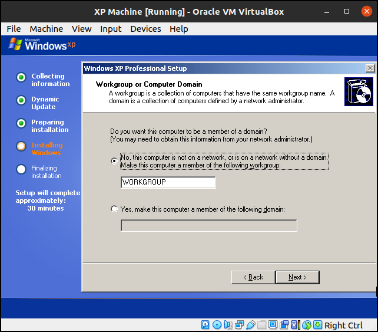Then, after a minute or so, the machine will restart. You'll see a prompt to 'Press a key' to boot from CD. Do not press anything here! Just wait, and the next screen you should see is the dialog box alerting you to the improvement of visual elements. Go ahead and click “Ok” here.
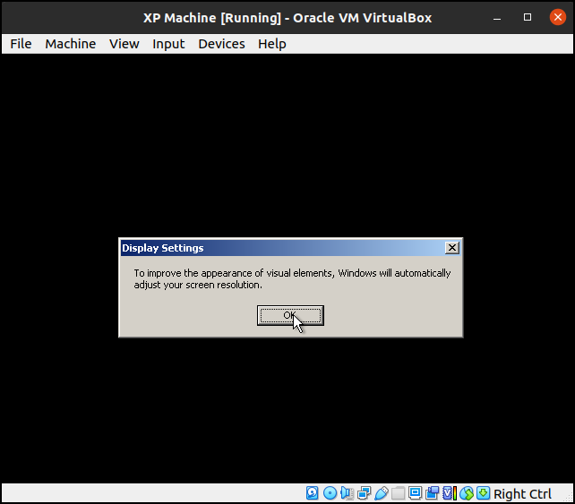And, assuming you can read the next dialog box, you can click “Ok” here as well.
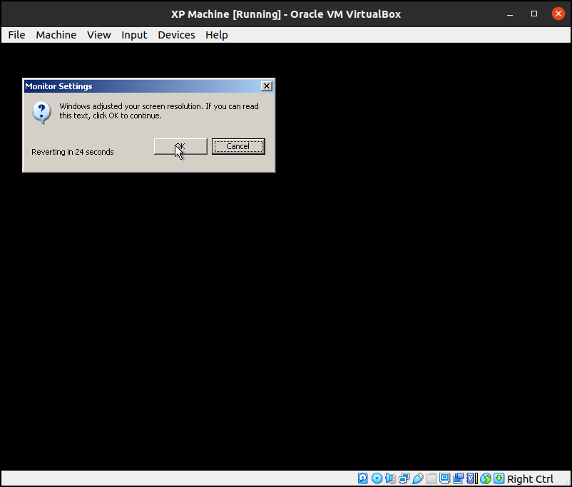Not long to go now! When the “Welcome to Microsoft Windows” screen appears, you can click “Next”.
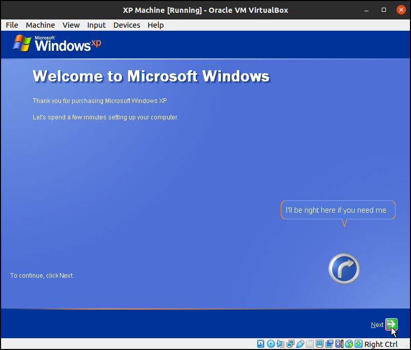When asked whether or not you’d like for this machine to be protected, either option is fine. It’s worth noting that – if you intend to use this virtual machine to connect to the internet – you’re probably going to be pretty vulnerable to malware no matter how many preventative steps you take. For that reason, it’s important not to use an obsolete OS like this for storing critical or private information, even if your host OS (Ubuntu, in our case) has adequate security protection.
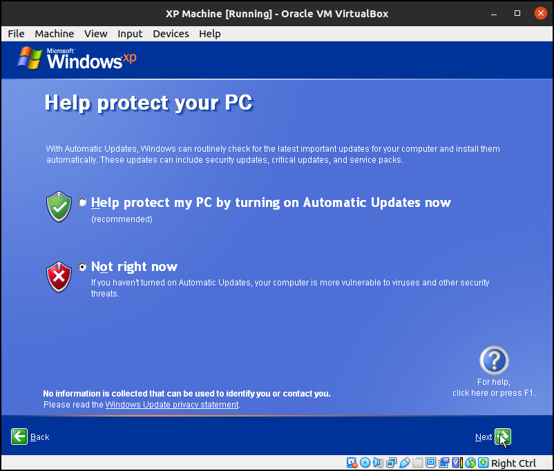I tend to skip any screens relating to the setup of internet functionality as – if I am connecting to the internet using XP – I tend to just use the default bridged network configuration (XP will essentially treat this like a fully-working ethernet connection, with no tinkering required on your part!).
Now, go ahead and enter your name (1), then click “Next” (2) again.
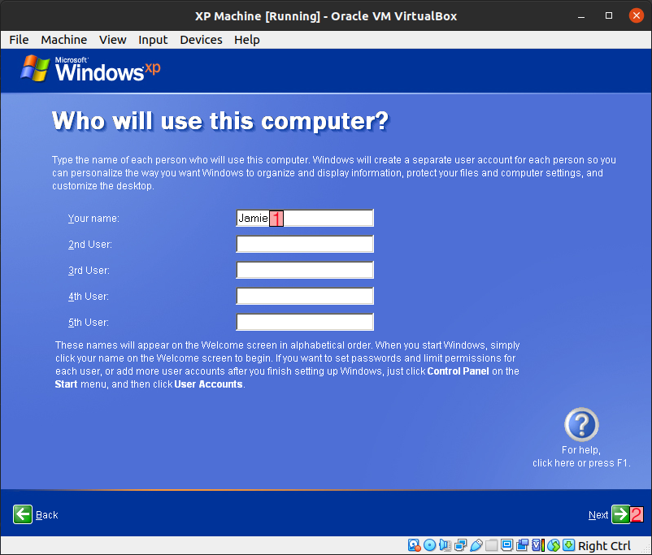After that, the setup process is complete! You can now click “Finish” to begin using your new… er, old operating system. Don’t go logging into your bank account with this bad boy! In fact, the best place to start with an old setup like this is probably TheOldNet.
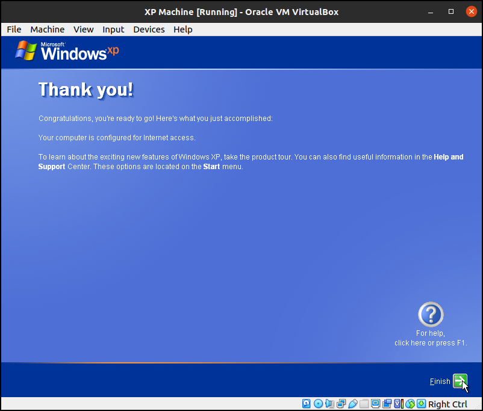